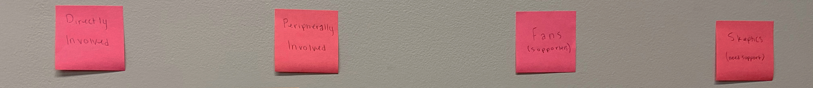
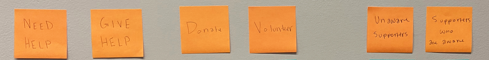
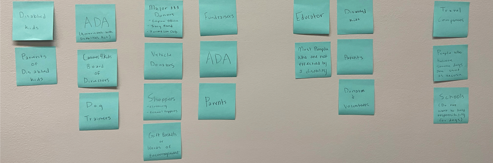

Audience and Goals
Finding out who is involved and what are the end goals.
Audience
In order to find out who is connected to or involved with Canines for Kids, we first began with a sticky note exercise.

I first began with the overall categories directly involved, peripherial involved, fans, and skeptics.

Then from there added some sub-categories like need help, give help, donate, volunteers, aware supporters and unaware supporters.

Lastly, I add the people that fit into each of these categories to get a better idea of who is involved in Canines for Kids.

Overarching Goals
Client
- To give disabled kids the help and independence they need in their day to day lives
- Gain more awareness of the helpful world of service dogs
- Raise more money, supplies and volunteers to help the cause
- Share more about past stories in order to show impact
- Gain a larger social media presence
Audience
- Understand why there is a need for service dogs and scholarships
- Understand how the organization works
- Can easily find how to donate or volunteer
- Can easily contact for more info
Website
- Have an inviting look that is connected to the organization
- Easy navigation and readable information and steps
- Sections for donations and sign ups for volunteering
- Will have an adjustable format from desktop to mobile device
- Include images, larger text, and hierarchy throughout
Specific Goals
| User | Goal | Content/Action |
|---|---|---|
| Disabled Kids | Discover the community, see other kids involved, learn about service dogs and how they can help | Become a canine kid, read facts and info, contact |
| Parents/Families | Learn about the organization, see if their child qualifies | Sign up their kid to be apart of the organization, read facts and info, contact directors and staff, volunteer and/or donate |
| Staff Members | Check up on events and schedules, see the impact the organization has on kids and families, see new volunteers or donations | Check calendar, contact volunteers, checking the traffic of the website in general |
| Interested Volunteers | Learn about the organization, Discover the community, look at the responsibilities of volunteers | volunteer and/or donate |
| Donors | Learn about the organization, see the impact the organization has on kids and families, donate, possibly volunteer | volunteer and/or donate |